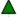

Truss Construction Tools
The app's menu offers a set of buttons for creating trusses including:
- Node: Click to create a new node on the canvas.
- Member: Use this to connect two nodes and create a member.
- Support: This button adds support to your truss. Three types of supports can be defined: pin support (), horizontal roller (), and vertical roller (
 ). Use the dropdown menu to select the support type.
). Use the dropdown menu to select the support type. - Load: Places point loads at one or more nodes. Short red lines represent loads. A load can be placed horizontally () or vertically () at the node. Use the dropdown menu to select the load direction.
- Delete: Removes selected nodes, members, supports, or loads from the structure.